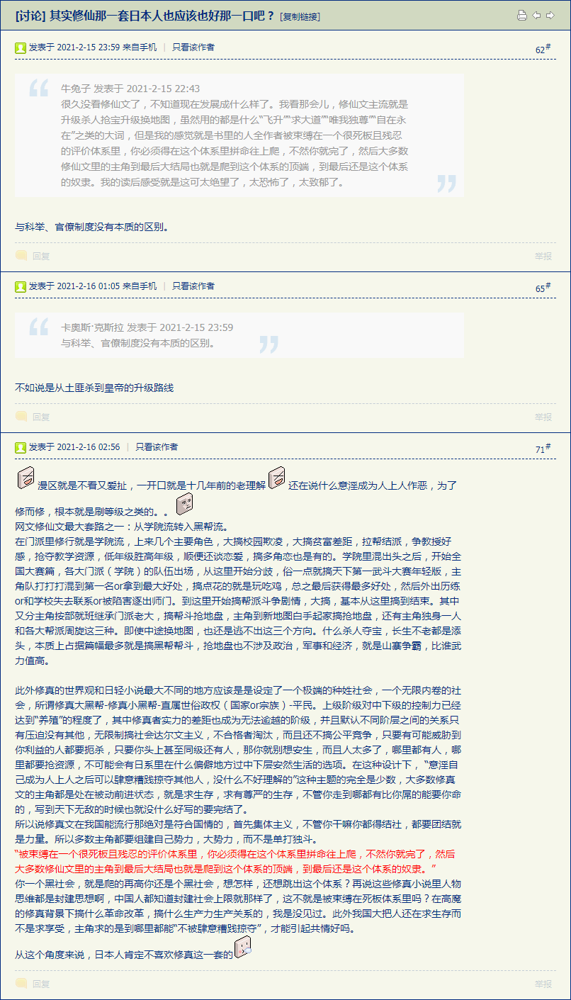
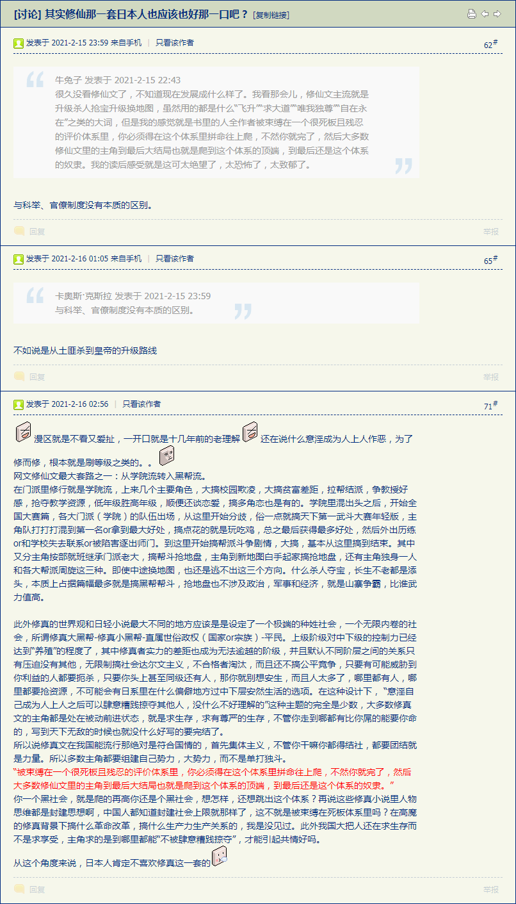

「远古神作」の〈撒母耳记下〉
12:1 耶和华差遣拿单去见大卫。拿单到了大卫那里，对他说：“在一座城里有两个人：一个是富户，一个是穷人。
12:2 富户有许多牛群羊群；
12:3 穷人除了所买来养活的一只小母羊羔之外，别无所有。羊羔在他家里和他儿女一同长大，吃他所吃的，喝他所喝的，睡在他怀中，在他看来如同女儿一样。
12:4 有一客人来到这富户家里，富户舍不得从自己的牛群羊群中取一只预备给客人吃，却取了那穷人的羊羔，预备给客人吃。”
12:5 大卫就甚恼怒那人，对拿单说：“我指着永生的耶和华起誓，行这事的人该死！
12:6 他必偿还羊羔四倍，因为他行这事，没有怜恤的心。”
12:7 拿单对大卫说：“你就是那人！耶和华以色列的 神如此说：‘我膏你作以色列的王，救你脱离扫罗的手；
12:8 我将你主人的家业赐给你，将你主人的妻交在你怀里，又将以色列和犹大家赐给你；你若还以为不足，我早就加倍地赐给你。
12:9 你为什么藐视耶和华的命令，行他眼中看为恶的事呢？你借亚扪人的刀杀害赫人乌利亚，又娶了他的妻为妻。
12:10 你既藐视我，娶了赫人乌利亚的妻为妻，所以刀剑必永不离开你的家。’
12:11 耶和华如此说：‘我必从你家中兴起祸患攻击你，我必在你眼前把你的妃嫔赐给别人，他在日光之下就与她们同寝。
12:12 你在暗中行这事，我却要在以色列众人面前，日光之下报应你。’”
13:1 大卫的儿子押沙龙有一个美貌的妹子，名叫她玛，大卫的儿子暗嫩爱她。
13:2 暗嫩为他妹子他玛忧急成病。他玛还是处女，暗嫩以为难向她行事。
13:3 暗嫩有一个朋友，名叫约拿达，是大卫长兄示米亚的儿子，这约拿达为人极其狡猾。
13:4 他问暗嫩说：“王的儿子啊，为何一天比一天瘦弱呢？请你告诉我。”暗嫩回答说：“我爱我兄弟押沙龙的妹子她玛。”
13:5 约拿达说：“你不如躺在床上装病，你父亲来看你，就对他说：‘求父叫我妹子她玛来，在我眼前预备食物，递给我吃，使我看见，好从她手里接过来吃。’”
13:6 于是暗嫩躺卧装病。王来看他，他对王说：“求父叫我妹子她玛来，在我眼前为我做两个饼，我好从她手里接过来吃。”
13:7 大卫就打发人到宫里，对她玛说：“你往你哥哥暗嫩的屋里去，为他预备食物。”
13:8 他玛就到她哥哥暗嫩的屋里，暗嫩正躺卧。他玛抟面，在他眼前作饼，且烤熟了，
13:9 在他面前，将饼从锅里倒出来。他却不肯吃，便说：“众人离开我出去吧！”众人就都离开他出去了。
13:10 暗嫩对他玛说：“你把食物拿进卧房，我好从你手里接过来吃。”他玛就把所作的饼拿进卧房，到她哥哥暗嫩那里，
13:11 拿着饼上前给他吃。他便拉住她玛说：“我妹妹，你来与我同寝。”
13:12 他玛说：“我哥哥，不要玷辱我。以色列人中不当这样行，你不要作这丑事。
13:13 你玷辱了我，我何以掩盖我的羞耻呢？你在以色列中也成了愚妄人。你可以求王，他必不禁止我归你。”
13:14 但暗嫩不肯听她的话，因比她力大，就玷辱她，与她同寝。
13:15 随后，暗嫩极其恨她。那恨她的心，比先前爱她的心更甚。对她说：“你起来，去吧！”
13:16 他玛说：“不要这样！你赶出我去的这罪，比你才行的更重。”但暗嫩不肯听她的话。
13:17 就叫伺候自己的仆人来，说：“将这个女子赶出去！她一出去，你就关门上闩。”
13:18 那时她玛穿着彩衣，因为没有出嫁的公主都是这样穿。暗嫩的仆人就把她赶出去，关门上闩。
13:19 他玛把灰尘撒在头上，撕裂所穿的彩衣，以手抱头，一面行走一面哭喊。
13:20 她胞兄押沙龙问她说：“莫非你哥哥暗嫩与你亲近了吗？我妹妹，暂且不要作声；他是你的哥哥，不要将这事放在心上。”他玛就孤孤单单地住在她胞兄押沙龙家里。
13:21 大卫王听见这事，就甚发怒。

 
